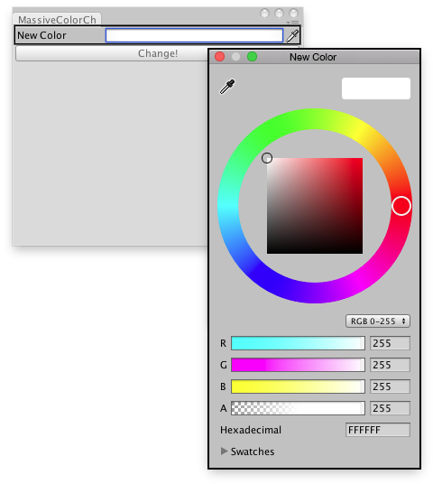

EditorGUILayout.ColorField
public static Color ColorField(GUIContent label,
Color value,
bool showEyedropper,
bool showAlpha,
bool hdr,
params GUILayoutOption[] options);
Obsolete public static Color ColorField(GUIContent label,
Color value,
bool showEyedropper,
bool showAlpha,
bool hdr,
ColorPickerHDRConfig hdrConfig,
params GUILayoutOption[] options);
Parameters
| label | Optional label to display in front of the field. | |
| value | The color to edit. | |
| showEyedropper | If true, the color picker should show the eyedropper control. If false, don't show it. | |
| showAlpha | If true, allow the user to set an alpha value for the color. If false, hide the alpha component. | |
| hdr | If true, treat the color as an HDR value. If false, treat it as a standard LDR value. | |
| options | An optional list of layout options that specify extra layout properties. Any values passed in here will override settings defined by the style.See Also: GUILayout.Width, GUILayout.Height, GUILayout.MinWidth, GUILayout.MaxWidth, GUILayout.MinHeight, GUILayout.MaxHeight, GUILayout.ExpandWidth, GUILayout.ExpandHeight. |
Returns
Color The color selected by the user.
Description 描述
Make a field for selecting a Color.

Change the color of the selected GameObjects.
using UnityEngine; using UnityEditor;
// Change the color of the selected GameObjects.
public class ExampleClass : EditorWindow { Color matColor = Color.white;
[MenuItem("Examples/Mass Color Change")] static void Init() { EditorWindow window = GetWindow(typeof(ExampleClass)); window.Show(); }
void OnGUI() { matColor = EditorGUILayout.ColorField("New Color", matColor);
if (GUILayout.Button("Change!")) ChangeColors(); }
private void ChangeColors() { if (Selection.activeGameObject) foreach (GameObject t in Selection.gameObjects) { Renderer rend = t.GetComponent<Renderer>();
if (rend != null) rend.sharedMaterial.color = matColor; } } }